What is it and what can I do with it?
You can download scalable SVG shapes of the visual representations of the well known Enterprise Integration Patterns to use it in Gliffy. Gliffy is a drawing program that works directly in the browser. In Gliffy you can import custom shapes as SVG.
This is what it looks like to use the EIP shapes in Gliffy:
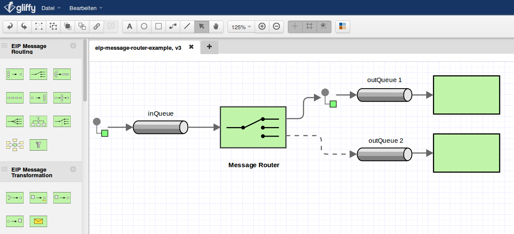
License and Author
The shapes are free for personal and commercial use under the terms of the MIT License. The author is Bernhard Grünewaldt.
Releases
| Release | Date | Description |
|---|---|---|
| 1.0 | 2014-11-07 | initial release of all (common) shapes. |
| 1.1 | 2014-11-10 | Gliffy does not allow more than 30 shapes per library, therefore we reorganized them with subfolders containing less than 30 shapes per folder. |
Quick Start - Installing the shapes in Gliffy
If you want to start immediately, you will need to execute the following steps:
- Download the EIP Shapes.
- Extract them to any folder.
- You should see these folders now:

- Browse to your Atlassian Jira or Confluence instance where Gliffy is installed.
- Open an existing Gliffy Drawing or start a new one.
- Then import the EIP Shapes (svg files) as described .
- Note: Gliffy does not allow more than 30 shapes per library, therefore we organize them by category. Create a library for each folder inside the zip. Then add the shapes by drag and drop to each library. The result should look like this:
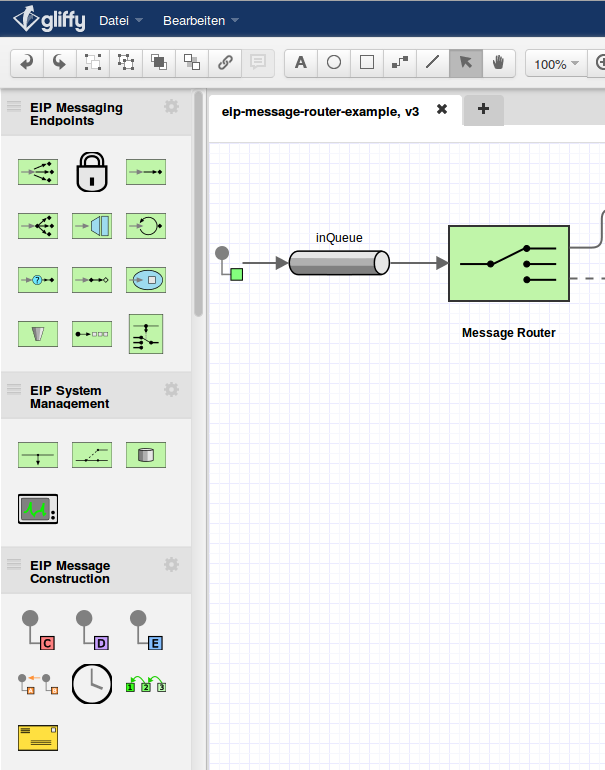 - You are ready to go.
Usage Guide
The shapes are designed to work together with the builtin Gliffy shapes. Therefore some of the Shapes will be painted using Gliffy arrows and boxes.
To paint Pipes and Filters use Gliffy arrows and rectangles.
| Name | EIP Shape | Note |
|---|---|---|
| Pipes | 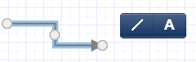 |
|
| 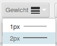 | ||
| Filters | 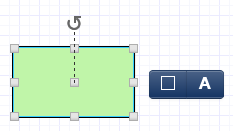 |
|
| Connectors | 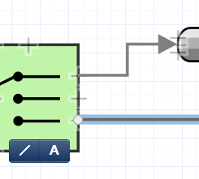 |
|
The colors used are:
| color | sample | color value hex |
|---|---|---|
| light green | #c0f5a9; | |
| light yellow | #fffbc0; | |
| light grey | #e6e6e6; | |
| dark grey | #808080; | |
| light turquoise | #ecf8fc; | |
| medium turquoise | #9ddbef; | |
| strong yellow | #ffe040; | |
| strong red | #df2f2f; |
Shape Overview
For reference see http://www.eaipatterns.com/toc.html or http://camel.apache.org/eip.html.
| Message Construction | ||
| Name | EIP Shape | Note |
|---|---|---|
| Command Message | 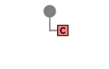 | - |
| Correlation Identifier | 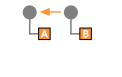 | - |
| Document Message | 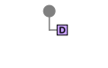 | - |
| Event Message | 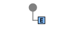 | - |
| Message Expiration | - | |
| Message Sequence | 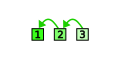 | - |
| Return Address | - | |
| Message Routing | ||
| Name | EIP Shape | Note |
| Aggregator | 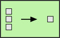 | - |
| Composed Message Processor | 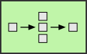 | - |
| Content Based Router | 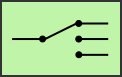 | - |
| Dynamic Router | 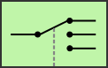 | - |
| Message Broker | 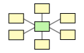 | - |
| Message Filter | 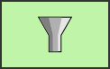 | - |
| Process Manager | 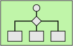 | - |
| Recipient List |  | - |
| Resequencer | 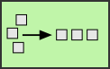 | - |
| Routing Slip | 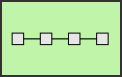 | - |
| Splitter | 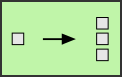 | - |
| Message Transformation | ||
| Name | EIP Shape | Note |
| Claim Check | 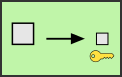 | - |
| Content Enricher | 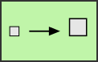 | - |
| Content Filter | 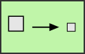 | - |
| Envelope Wrapper | - | |
| Normalizer | 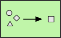 | - |
| Messaging Channels | ||
| Name | EIP Shape | Note |
| Point to Point Channel | - | Note: Use Gliffy arrows to build this shape. 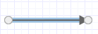 |
| Publish Subscribe Channel | - | Note: Use Gliffy arrows to build this shape. 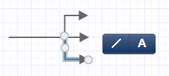 |
| Channel Adapter | - | |
| Datatype Channel | 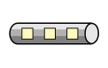 | - |
| Dead Letter Channel | 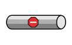 | - |
| Invalid Message Channel | 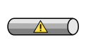 | - |
| Messaging Bridge | 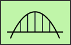 | - |
| Message Bus | - | Note: Use the Message Channel Shape since it is the same and Gliffy arrows. 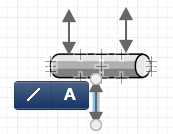 |
| Messaging Endpoints | ||
| Name | EIP Shape | Note |
| Competing Consumers | 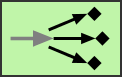 | - |
| Durable Subscriber |
Note: Use combined with some Gliffy arrows. 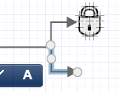 | |
| Event Driven Consumer | 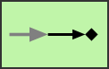 | - |
| Message Dispatcher | 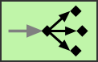 | - |
| Messaging Gateway | 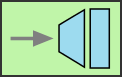 | - |
| Polling Consumer | 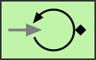 | - |
| Selective Consumer | 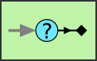 | - |
| Service Activator | 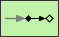 | - |
| Transactional Client | 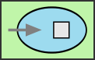 | - |
| Messaging Systems | ||
| Name | EIP Shape | Note |
| Message Router | - | Note: Use the Content Based Router Shape since it is the same. |
| Message Channel | - | |
| Message Endpoint | - or - | Note: You will have to use Gliffy arrows and connect at the center. Therefore there are two versions of the Message Endpoint. 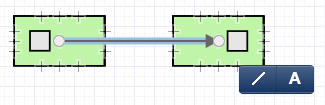 |
| Message | -or- 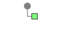 -or- | Note: Currently There are three versions. If you need more just contact us. |
| Message-Translator | 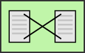 | - |
| System Management | ||
| Name | EIP Shape | Note |
| Channel Purger | 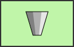 | - |
| Control Bus | - | |
| Detour | 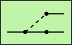 | - |
| Message Store | 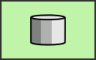 | - |
| Smart Proxy | 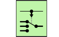 | - |
| Test Message | 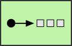 | - |
| Wire Tap | 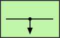 | - |